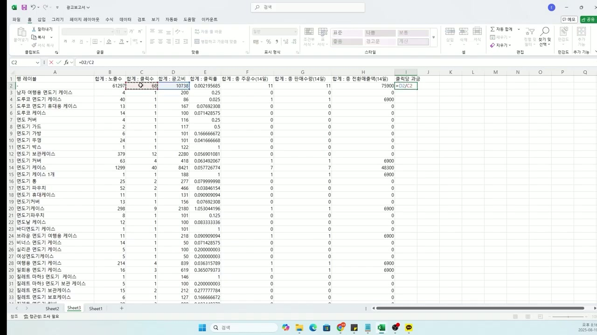
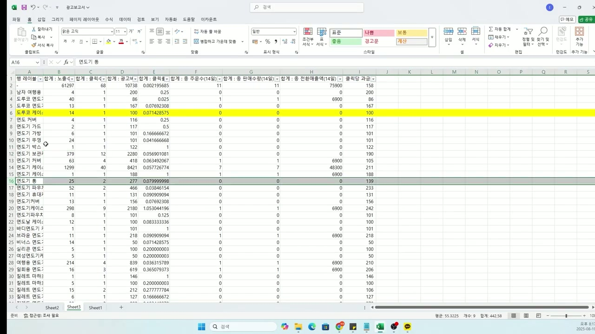
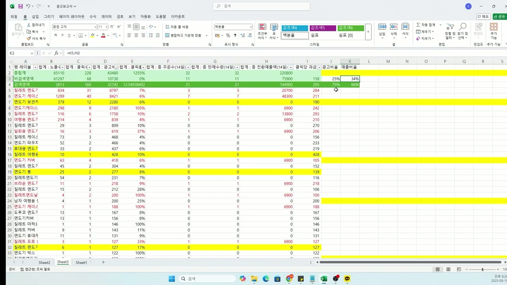
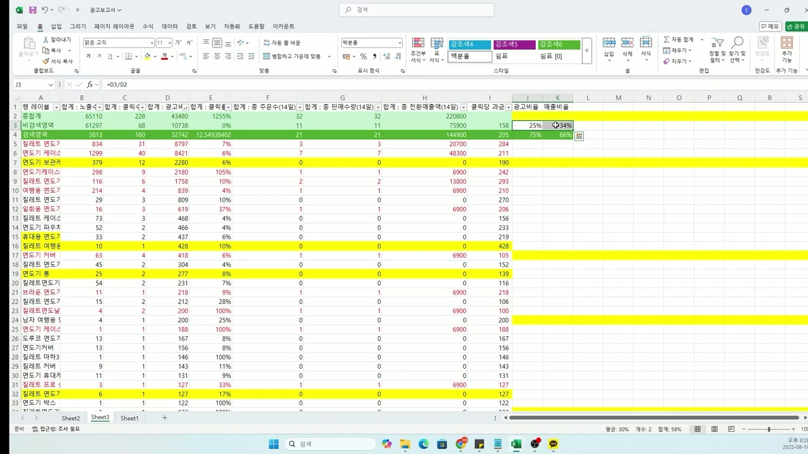
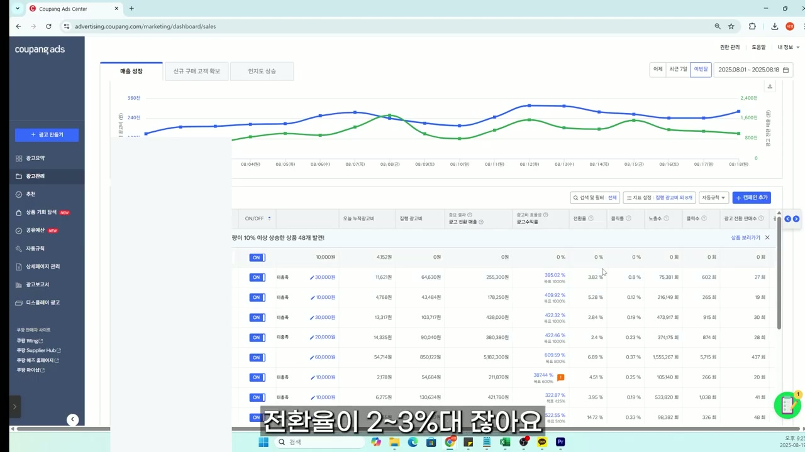

채널: 셀러공 | 길이: 13:45 | 날짜: 2025.08.22
핵심 내용
- 쿠팡 광고는 "자동운영 - 매출최적화" 모드를 반드시 사용해야 한다. 쿠팡의 AI 시스템이 자동으로 입찰가와 키워드를 최적화해주는 기능으로, 수동 세팅보다 훨씬 효율적이다. 대부분의 셀러가 이 기능을 제대로 활용하지 못하고 있어 광고비를 낭비하고 있다.
- 캠페인 네이밍 규칙이 광고 관리의 핵심이다. "상품명 / 시작날짜-2주후날짜 / END ROAS(목표 광고수익률)" 형식으로 캠페인 이름을 지어야 한다. 이렇게 하면 나중에 광고 성과를 한눈에 파악하고 관리할 수 있다.
- 광고보고서를 엑셀로 다운로드하여 키워드별 성과를 분석하고, 제외키워드를 반드시 설정해야 한다. 내 상품과 연관 없는 키워드에서 클릭이 계속 발생하면 쿠팡 AI가 해당 키워드를 확장하게 되고, 매출이 발생하지 않으면 AI가 경쟁력이 없다고 판단하여 노출을 중단해버린다.
- 목표 광고수익률(ROAS) 설정이 전략의 핵심이다. 비검색 영역에서 잘 팔리는 상품은 목표 ROAS를 높여주고, 검색 영역에서 잘 팔리는 상품은 목표 ROAS를 내려줘야 한다. 이를 판단하기 위해 엑셀 보고서에서 비검색영역과 검색영역의 매출 비중을 분석해야 한다.
- 일예산은 최소 1만원 이상으로 설정하고, 목표 광고수익률은 500% 이상에서 시작하는 것이 안전하다. 쿠팡 시스템이 3~7일간 학습 기간을 거치며, 이 기간 동안 설정을 변경하면 학습에 방해가 될 수 있다. 2주 후 성과를 평가하고 목표 ROAS를 조정하는 전략이 효과적이다.
- 쿠팡 광고는 단순히 광고만 잘한다고 되는 것이 아니라, 상품 상세페이지(리스팅), 가격 경쟁력, 리뷰 등 기본기가 뒷받침되어야 한다. 전환율이 2~3%대로 잡히는 것이 좋은 성과이며, 이를 위해 상세페이지 최적화가 필수적이다.
상세 분석
1. 도입부: 광고 관리창 소개와 문제 제기
영상은 쿠팡 광고 관리 센터(Coupang Ads Center)의 실제 대시보드 화면을 보여주며 시작한다. 화면에는 여러 상품의 광고 캠페인이 ON 상태로 운영되고 있으며, 각 캠페인별로 일예산(10,000원~30,000원), 오늘 누적광고비, 집행 광고비, 광고 전환 매출, 광고수익률, 전환율, 클릭율, 노출수, 클릭수, 광고 전환 판매수 등의 지표가 표시되어 있다.
주목할 점은 광고수익률이 상품마다 크게 다르다는 것이다. 일부 상품은 442.34%, 381.81%, 372.44%, 429.43% 등 준수한 수익률을 보이고 있으며, 특히 하나의 상품은 625.82%라는 높은 광고수익률을 기록하고 있다(일예산 30,000원, 집행 광고비 910,823원, 광고 전환 매출 5,700,100원). 반면 일부는 277.29%, 373.6% 등 상대적으로 낮은 수익률을 보인다. 날짜 범위는 2025.08.01 ~ 2025.08.19로 설정되어 있으며, 페이지 1/3으로 총 3페이지 분량의 상품이 광고 운영 중이다. 화면 하단 자막에 "제 광고관리창을 보시면"이라는 텍스트가 표시된다.
발표자(셀러공)는 자신의 광고 관리창을 직접 보여주며 "되고 있는 상품 8개 발견!"이라는 메시지와 함께, 실제 운영 중인 캠페인들의 성과를 공개한다.
2. 영상의 목적: 광고 수익률 개선을 위한 세팅법
발표자는 초록색 칠판 앞에 서서 "광고 수익률이 잘 안나오거나"라는 주제로 이야기를 시작한다. 쿠팡에서 광고를 돌리고 있지만 수익률이 기대에 못 미치는 셀러들을 위한 영상임을 밝힌다.
"오늘은 제가 약"이라는 자막과 함께, 자신이 실제로 운영하면서 터득한 쿠팡 광고 세팅 노하우를 공유하겠다고 말한다. 약 3년간의 쿠팡 셀러 경험을 바탕으로 한 실전 팁이라는 점을 강조한다.
"하지만 쿠팡 광고"에 대해, 많은 셀러들이 광고를 그냥 기본 세팅 그대로 돌리고 있는데 이것이 큰 문제라고 지적한다. 쿠팡 광고의 세팅법을 모르면 광고비만 날리고 실질적인 매출 향상 효과를 보지 못한다고 경고한다.
3. 광고 등록 Step 1: 광고 목표 설정
쿠팡 Ads Center에서 "광고 등록" 페이지로 이동한다. 화면에는 광고 목표 선택 화면이 표시되며, 세 가지 옵션이 제공된다:
- 매출 성장 (선택됨, 파란색 체크 표시)
- 중요 결과 지표: 광고 전환 매출
- 광고를 통해 발생한 매출을 높입니다.
- 신규 구매 고객 확보 (Beta)
- 중요 결과 지표: 신규 구매 고객 수
- 내 상품을 구매한 적 없는 고객 대상으로 첫 구매자 수를 높입니다.
- 인지도 상승
- 중요 결과 지표: 도달
- 최대한 많은 사람에게 광고를 노출합니다.
발표자는 "매출 성장"을 선택해야 한다고 강조한다. 대부분의 셀러에게는 매출을 직접적으로 늘리는 것이 가장 중요한 목표이기 때문이다.
4. 광고 등록 Step 2: 기본 설정 - 캠페인 이름과 기간
"1. 기본 설정 → 2. 광고 설정 → 3. 상세 설정" 3단계 중 1단계인 기본 설정 화면이다. 상단에 "광고는 어디에 노출되나요?"라는 안내가 있으며, 검색 결과 페이지, 상품 상세 페이지, 장바구니 페이지, 쿠팡 홈 화면, 외부 영역 등에 상품 광고가 노출된다고 설명되어 있다. 오른쪽에는 검색 결과 페이지, 상품 상세 페이지, 외부 영역 예시 이미지가 표시된다.
캠페인 이름 입력란에 "상품명 / 250819-250902 /"라고 입력하는 모습이 보인다(21/150자). 기간 설정은 "종료일 없음"이 선택되어 있으며, 시작일은 2025-08-19로 되어 있다. 특정 기간 집행을 원할 경우 "특정 기간"을 선택할 수도 있다.
화면 하단에 핵심 네이밍 공식이 강조 표시된다:
"상품명 / 오늘 날짜부터 2주 후 날짜 / END ROAS"
캠페인 이름 예시: "상품명 / 250819-250902 / 200%" (26/150자)
이 네이밍 규칙의 의미:
- 상품명: 어떤 상품의 광고인지 바로 알 수 있도록
- 250819-250902: 광고 시작일부터 2주 후 날짜를 적어, 2주 후에 성과를 평가하는 기준점으로 활용
- END ROAS (200%): 2주 후 평가 시점에서의 실제 달성 ROAS를 기입하여, 이 캠페인이 어떤 성과를 냈는지 한눈에 파악
이렇게 하면 여러 캠페인을 동시에 운영할 때 관리가 훨씬 수월해진다.
5. 광고 등록 Step 3: 광고 상품 설정과 수동/AI 스마트광고
광고 상품 설정 화면에서 두 가지 옵션이 제공된다:
- 수동 상품 설정: 원하는 상품을 직접 선택하여 광고하는 방식 (현재 선택됨)
- AI 스마트광고: 자동으로 상품을 선택하고 바꿔주는 방식
발표자는 수동 상품 설정을 선택한다. 화면에는 "이제 매출 상승의 이유가 함께 제공됩니다"라는 팝업이 나타나며, 2가지 이유를 통해 내 상품의 특징을 알 수 있다고 안내한다. 필터 옵션으로 "광고효율UP 매출 상승이 예상되는 상품"과 "노출수 부족" 등이 있다.
오른쪽에는 상품 효율지수 슬라이더가 "최소"에서 "권장"까지 표시되어 있으며, 선택한 상품 0개로 최대 500개까지 선택 가능하다.
6. 광고 등록 Step 4: 예산과 목표 광고수익률 설정 (핵심!)
2단계 "광고 설정" 화면의 핵심 설정:
과금/예산운영 방식: CPC (클릭당 과금) / 탄력적 예산 운영
- 광고 운영 시 일예산을 최대 1.2배까지 탄력적으로 사용
- 광고비는 CPC(클릭당 과금)방식으로, 매출액이나 반품/주문취소 여부와 무관하게 발생
일예산 설정: 약 30,000원 (권장: 30,000원)
자동규칙 설정 (OFF): 광고비가 부족할 때 일예산을 원하는 만큼 올려 광고를 계속 운영하는 옵션. 쿠팡 골든타임 이전 예산 부족으로 광고가 중지되면 많은 기회를 놓칠 수 있다는 안내.
목표 광고수익률 설정: 초기 350%로 표시됨
- 1단계: 목표 광고수익률을 입력해주세요
- 2단계: 설정한 목표에 따라 입찰가와 키워드를 지속적으로 최적화
- 3단계: 보고서를 통해 목표 광고수익률 달성 여부 확인하기
- 목표 광고수익률은 최소 100%에서 최대 10,000%까지 입력 가능
발표자는 목표 광고수익률을 500%로 변경한다. 이 때 "적절한 광고수익률을 입력해 주세요"라는 경고와 함께 제안 광고수익률: 350%가 표시된다. "최대 매출 달성을 위해, 제안과 같거나 낮은 수익률 목표를 권장합니다"라는 쿠팡 안내가 있지만, 발표자는 이를 무시하고 500%로 설정한다.
최종 설정:
- 일예산: 10,000원
- 목표 광고수익률: 500%
- "완료" 버튼 클릭
쿠팡이 제안하는 350%보다 높은 500%로 시작하는 이유는, 처음부터 낮은 수익률로 시작하면 광고비가 과도하게 소진될 수 있기 때문이다.
7. 캠페인 생성 완료와 학습 기간 (매우 중요)
캠페인 등록 완료 후 나타나는 화면에 핵심 안내가 표시된다:
"캠페인 수정에 따라 3~7일 동안 시스템이 학습합니다"
학습 과정 상세 설명:
- 캠페인을 등록하거나 중요한 설정을 변경하면 시스템이 학습을 시작합니다
- 광고 성과를 가장 잘 낼 수 있는 상태를 찾기 위해 시스템이 쿠팡 시장 상황과 판매 성과를 학습합니다
- 3~7일 동안 학습 데이터를 충분히 수집하면 학습이 종료되고 성과가 안정화될 수 있습니다
- 학습 중에 중요한 설정(예산, 목표 광고수익률, 상품, 캠페인 on/off)을 변경하면 학습에 방해가 될 수 있습니다
이 기간 동안 성과가 안 나온다고 조급하게 설정을 바꾸면 오히려 역효과가 난다. 캠페인 수정 후 20분 뒤부터 운영되며, 일부 상품은 사전 검수 후 광고가 시작된다.
광고 목표: 매출 성장 / 기본 설정 확인.
8. 광고보고서 다운로드 및 엑셀 분석 (핵심 전략)
발표자는 쿠팡 Ads Center의 광고보고서 메뉴에서 데이터를 엑셀로 다운로드하는 방법을 보여준다. 엑셀 스프레드시트(Sheet1)에는 다음 컬럼들이 확인된다:
- 광고유형 (cpc), 과금방식 (3P), 판매방식
- 캠페인 ID, 캠페인명, 광고그룹, 광고고전환 데이터
- 키워드
- 노출수, 클릭수, 클릭률(CTR)
- 광고비
- 판매수(14일), 전환매수(14일), 전환매출액(14일)
약 30개 이상의 키워드별 데이터가 나열되어 있으며, 각 키워드의 노출, 클릭, 전환, 매출 데이터를 한눈에 볼 수 있다. 금액은 최대 34,500원에서 0원까지 다양하게 분포한다.
9. 엑셀 피벗 분석: 키워드별 성과 정리

엑셀 분석 - 키워드별 정리 (Sheet3)
원본 데이터를 별도 시트(Sheet3)에서 가공하여 키워드별 성과를 정리한다. 정리된 컬럼:
- 행 레이블 (키워드명): 면도기 케이스, 면도기 보관케이스, 실레트 면도기, 여행용 면도기 등
- 합계: 노출수, 합계: 클릭수, 합계: 광고비
- 합계: 클릭률
- 합계: 종 판매수(14일), 합계: 종 전환매수(14일)
- 합계: 종 전환매출액(14일)
- 클릭 과금 (=D2/C2 수식)
총합계: 61,297건 노출, 68건 클릭, 10,738원 광고비, 75,900원 전환매출
상위 키워드:
- "면도기 케이스": 1,299건 노출, 40건 클릭, 8,421원 광고비, 48,300원 전환매출
- "면도기 보관케이스": 379건 노출, 12건 클릭, 2,280원 광고비
- "면도기케이스": 298건 노출, 9건 클릭, 2,180원 광고비
10. 제외키워드 설정의 중요성 (핵심 전략)

제외키워드 분석 - 비효율 키워드 하이라이팅
엑셀에서 노란색으로 하이라이트된 행들이 성과가 나쁜 키워드들이다. 클릭은 발생하지만 전환(판매)이 0인 키워드들:
- "휴대용 면도기": 33건 노출, 2건 클릭, 437원 광고비, 전환 0
- "실레트 여행용": 10건 노출, 1건 클릭, 428원 광고비, 전환 0
- "면도기 통": 25건 노출, 2건 클릭, 277원 광고비, 전환 0
- "실레트멘도널": 4건 노출, 2건 클릭, 200원 광고비, 전환 0
- 기타 다수의 비효율 키워드
화면에 "제외키워드가 중요한 이유"가 크게 표시되며, 다음 연쇄 프로세스가 설명된다:
- 내 상품과 연관 없는 키워드 계속 클릭 발생
- → 연관 없는 키워드에서 키워드 확장 (쿠팡 AI가 잘못된 방향으로 확장)
- → 매출이 발생되지 않음 (연관 없는 키워드이므로 전환 불가)
- → 쿠팡AI가 경쟁력이 없다 판단 (AI가 상품 자체에 경쟁력이 없다고 오판)
- → 노출중단 (광고 노출 자체가 중단되는 최악의 시나리오)
이것이 제외키워드를 반드시 설정해야 하는 핵심 이유이다.
11. 비검색영역 vs 검색영역 매출 분석
엑셀에서 비검색영역과 검색영역의 매출을 분리하여 분석한다. 수식 "=B2-"를 활용하여 총합계에서 비검색영역을 빼 검색영역 데이터를 산출한다:
- 총합계: 65,110건 노출, 228건 클릭, 43,480원 광고비, 220,800원 전환매출
- 비검색영역: 61,297건 노출, 68건 클릭, 10,738원 광고비, 75,900원 전환매출
- 검색영역: 3,813건 노출, 160건 클릭, 32,742원 광고비 (=12.5493… 클릭단가), 144,900원 전환매출

비검색영역 25% vs 검색영역 75%
비검색영역과 검색영역의 매출 비중 계산 결과:
- 비검색영역: 전환매출 비중 25%, 광고비 비중 34%
- 검색영역: 전환매출 비중 75%, 광고비 비중 66%
수식: =H3/H2 (비검색영역 비중), =H4/H2 (검색영역 비중)
12. 목표 ROAS 조정 전략: 비검색 vs 검색 영역 (핵심 전략)

비검색 잘 팔리면 ROAS 높이고, 검색 잘 팔리면 ROAS 내린다
핵심 전략이 화면에 크게 표시된다:
"비검색 영역에서 잘 팔리는 상품이라면? → 목표 광고 수익률을 높여준다."
"검색 영역에서 잘 팔리는 상품이라면? → 목표 광고 수익률을 내려준다."
전략의 논리:
- 비검색영역(상품 상세페이지, 장바구니, 홈 화면 등)에서 매출이 잘 나오는 상품은 이미 자연 노출로 수익이 발생하는 구조이므로, 목표 ROAS를 높여서 광고비 효율을 극대화
- 검색영역에서 매출이 잘 나오는 상품은 검색 결과 상위 노출이 중요하므로, 목표 ROAS를 낮춰서 더 적극적으로 입찰하여 상위 노출
J3 셀에 "=D3/D2" 수식이 보이며, 각 영역의 광고비 대비 매출 비중을 정확하게 계산하는 과정을 보여준다.
13. 실전 사례: 목표 ROAS 1000%로 설정한 캠페인 성과

목표 광고수익률 1000% 캠페인 성과
실제로 목표 광고수익률을 1000%로 설정한 캠페인의 성과를 공개한다. 쿠팡 Ads Center 대시보드에서:
- 기간: 2025.08.01 ~ 2025.08.18
- 매출 성장 그래프에서 광고 전환 매출(파란 선)이 꾸준히 상승하여 최대 약 800만원까지
- 집행 광고비(초록 선)는 약 120만원 수준으로 낮게 유지
- "량이 10% 이상 상승한 상품 48개 발견!"이라는 메시지
각 캠페인 광고수익률:
- 395.02% (목표 1000%), 409.92% (목표 1000%), 422.32%, 422.46%, 609.59% (목표 1000%), 387.44%, 322.87% (목표 425%), 522.55% (목표 510%), 788.59%
전환율: 3.82%, 5.28%, 2.84%, 2.4%, 6.89%, 4.51%, 3.95%, 14.72%, 7.84%
화면 하단: "목표광고 수익률을 1000%로 맞췄다는 거죠"
"전환율이 2~3%대 잡아요"라는 자막과 함께, 전환율 2~3%만 되어도 충분히 좋은 성과라고 설명한다. 그래프에서 매출 추이가 약 2,400만원까지 상승한 것이 확인된다.
14. 마무리: 기본기의 중요성과 실전 조언
"상황이 다 다르다보니 쉽지 않을 거예요"라며, 모든 셀러의 상품, 카테고리, 경쟁 환경이 다르기 때문에 동일한 세팅이 동일한 결과를 보장하지 않는다는 현실적 조언을 한다.
"그냥 이상한거 하지 말고" 검증되지 않은 방법이나 편법에 의존하지 말고 기본에 충실하라고 강조한다.
쿠팡 성공의 세 가지 핵심 요소:
- 아이템 소싱: 좋은 상품을 찾는 것이 모든 것의 기본
- 경쟁사 분석: 경쟁 상품을 철저히 분석하여 차별화 포인트 발굴
- 광고 최적화: 이 영상에서 배운 세팅법을 활용한 지속적 최적화
"물론 짧은 시간에" 모든 것을 설명하기 어렵지만, 이 영상이 광고 세팅의 기본 프레임워크를 제공한다고 한다. "빠른 분들은 한달만에 어떻게 하는지" 놀라울 정도의 성과 개선을 경험할 수 있다고 격려하면서도, 인내심을 갖고 꾸준히 최적화해야 한다는 점을 강조한다.
주요 인용 및 발언
"제 광고관리창을 보시면..." - 실제 자신의 광고 대시보드를 공개하며 신뢰성 확보
"광고 수익률이 잘 안나오거나..." - 많은 셀러들이 겪는 공통 문제를 짚음
"상품명 / 오늘 날짜부터 2주 후 날짜 / END ROAS" - 캠페인 네이밍의 핵심 공식
"제외키워드가 중요한 이유: 내 상품과 연관 없는 키워드 계속 클릭 발생 → 연관 없는 키워드에서 키워드 확장 → 매출이 발생되지 않음 → 쿠팡AI가 경쟁력이 없다 판단 → 노출중단"
"비검색 영역에서 잘 팔리는 상품이라면? 목표 광고 수익률을 높여준다. 검색 영역에서 잘 팔리는 상품이라면? 목표 광고 수익률을 내려준다."
"목표광고 수익률을 1000%로 맞췄다는 거죠"
"전환율이 2~3%대 잡아요" - 전환율 기준점 제시
"상황이 다 다르다보니 쉽지 않을 거예요" - 현실적 기대치 설정
"그냥 이상한거 하지 말고" - 기본에 충실하라는 핵심 메시지
"아이템 소싱, 경쟁사 분석, 광고 최적화" - 쿠팡 성공의 세 기둥
"빠른 분들은 한달만에 어떻게 하는지" - 빠른 성과 가능성 언급
결론 및 시사점
핵심 메시지
이 영상의 가장 중요한 메시지는 쿠팡 광고를 기본 세팅 그대로 방치하면 안 된다는 것이다. 쿠팡의 AI 자동운영 시스템은 강력하지만, 셀러가 올바른 초기 설정과 지속적인 키워드 관리를 해줘야만 제대로 작동한다.
실전 세팅 체크리스트
- 광고 목표: "매출 성장" 선택
- 캠페인 이름: "상품명 / 시작일-2주후 / END ROAS" 형식으로 통일
- 광고 상품: 수동 선택 (AI 스마트광고 X)
- 운영 방식: 자동운영 - 매출최적화
- 일예산: 최소 10,000원 이상 (권장 30,000원)
- 목표 ROAS: 500% 이상에서 시작 (쿠팡 제안 350%보다 보수적으로)
- 학습 기간: 3~7일 동안 설정 변경 절대 금지
- 2주 후 평가: 광고보고서 엑셀 다운로드 → 키워드별 성과 분석
- 제외키워드: 전환 0인 비효율 키워드 즉시 제외 등록
- ROAS 조정: 비검색/검색 영역 매출 비중 분석 후 목표 ROAS 조정
- 비검색 영역 매출 비중 높으면 → ROAS 올리기
- 검색 영역 매출 비중 높으면 → ROAS 내리기
향후 전망 및 시사점
- 쿠팡 광고 시스템은 지속적으로 AI 기능이 강화되고 있으며(신규 구매 고객 확보 Beta 기능 등), 이에 맞춰 셀러도 데이터 기반의 의사결정 역량을 키워야 한다
- 단순히 광고 세팅만 잘한다고 되는 것이 아니라, 아이템 소싱 → 경쟁사 분석 → 상세페이지 최적화 → 광고 최적화의 전체 파이프라인이 갖춰져야 한다
- 각 셀러의 상황(상품 카테고리, 경쟁 강도, 가격대 등)에 따라 최적의 ROAS 목표가 다르므로, 데이터를 보고 지속적으로 조정하는 습관이 중요하다
- 빠르면 한 달 내에 성과 개선이 가능하지만, 꾸준한 모니터링과 최적화가 장기적인 성공의 열쇠이다
- 전환율 2~3%대가 좋은 기준이며, 이를 달성하기 위해서는 광고 세팅뿐 아니라 상품 경쟁력, 가격, 리뷰, 상세페이지 품질 등 전반적인 요소가 함께 개선되어야 한다